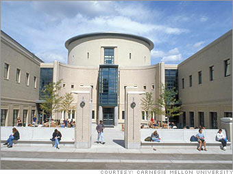
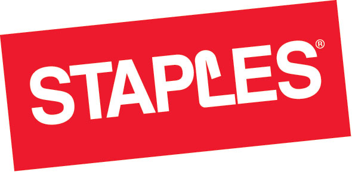

-

 TEACHING ASSISTANT
While at Carnegie Mellon, I work as a Teaching Assistant for three courses.
TEACHING ASSISTANT
While at Carnegie Mellon, I work as a Teaching Assistant for three courses.
During the fall semester, I participate as a TA for 67-371: Fundamentals of System Development. In this course, I help students understand the business processeses behind Constructing Software Systems such as Agile Development, Object-Oriented Design, Business Project Management and Scrum.
During the spring semester, I participate as a TA for 67-272: Application Design & Development, and 67-101: Concepts of Information Systems. In 67-272, I work as a lab assistant and hold regular office hours to help students develop Web Applications using Ruby on Rails.
In 67-101, I work as a lab assistant to help students learn the basics of Web Development, including HTML, CSS, Javascript and Jquery.
-
 NEXT JUMP
During the Summer of 2012, I worked as a Product Development Intern at Next Jump, Inc.
NEXT JUMP
During the Summer of 2012, I worked as a Product Development Intern at Next Jump, Inc.
While at Next Jump, I spent time developing in PHP and working with AARP, one of Next Jump's clients. I gained experience working with PHP Zend Framework, Prototype.js, and Microsoft SQL Server. I also spent 5 weeks working with two other interns to develop an internal site for Next Jump employees to review local attractions.
 VIEW A CASE STUDY
VIEW A CASE STUDY
One of the projects I worked on was creating a 'Local Offers' page for AARP Discounts. In addition to using Javascript, PHP and SQL to create this page, I was responsible for coordinating with HR and meeting AARP's requests. -
AKAMAI
During the Summer of 2011, I worked as a Software Engineering Intern in the Enterprise Acceleration department at Akamai, Inc.
While at Akamai, I wrote programs in Object-Oriented Perl and constructed an internal tool using Ruby on Rails and MySQL. In addition to development, I was an active participant in our team's Agile Scrum software development process. I took part in the team's daily stand-up meetings, and demoed my work every other week.
-

STAPLES
During the Summer of 2010, I worked as an Information Systems Intern in the Telecom Ops department at Staples Corporate Headquarters.
While at Staples, I assisted the Telecom Operations Group in the migration and installation of their phone systems to VoIP. In addition, I worked with Cisco Unified Communications Manager to configure Cisco IP Phones. I also worked on a project to remotely upgrade Retail Store Servers from Windows NT to Windows Server 2003.